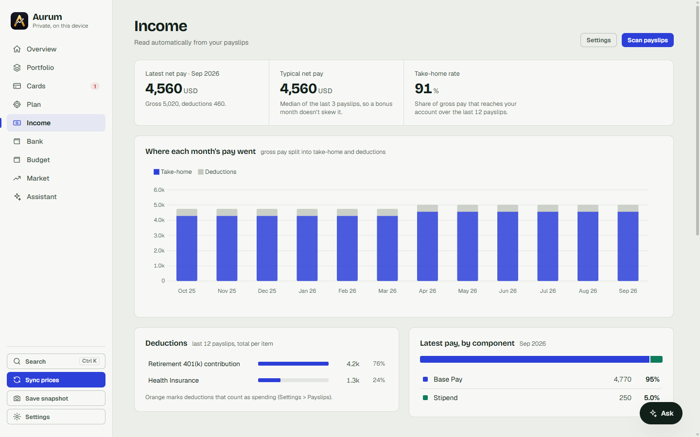
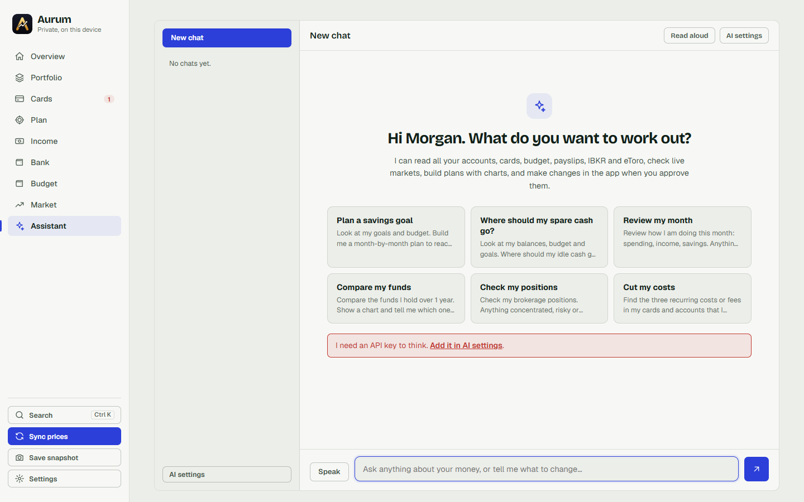
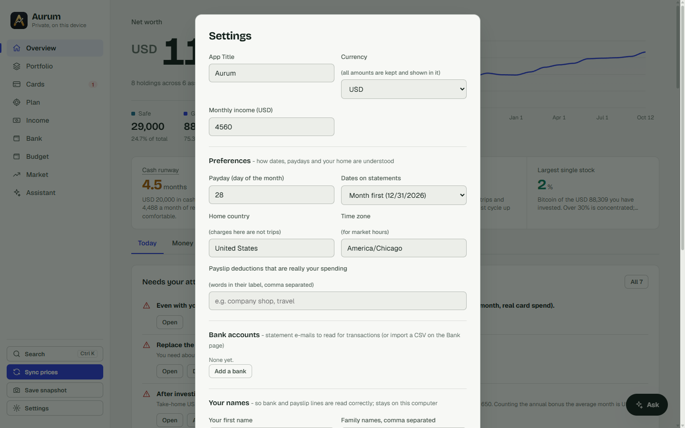

Features
Nine pages, one local app. Screenshots are the demo data set.
Overview
Net worth with history, the safe versus growth split, cash runway in months, savings rate, everyday card spend, and a "needs your attention" list (due cards, unfunded goals, idle cash, concentration, unusual spending). Tabs for money, spending, insights and data.

Portfolio
Holdings of any kind: stocks, ETFs, mutual funds, bonds, savings, gold, crypto, cash. Priced live from Yahoo Finance (tickers, fund NAVs), or entered by hand. Foreign-currency holdings are converted at daily rates. Optional read-only sync from Interactive Brokers (Flex Query) and eToro. Target allocation, gain and loss against cost, and a net-worth snapshot taken daily.

Cards
Add your credit cards, then either point the app at the mailbox where statements arrive (it reads the PDFs: totals, due dates, every transaction) or import a CSV export from your issuer. Both work for any bank: see Any bank. Spending is sorted into categories and sub-categories by a rule engine (with a cheap AI fallback you can switch off), grouped into trips by country, and measured per statement cycle because each card closes on a different day. Rewards, fees and exchange-rate markup are measured from the statements, so "is this card worth it?" has a number for an answer.

Plan
A money plan built from what you really earn and spend: where the emergency fund stands, what each dated goal still needs per month, how much is free to invest and a staged way to do it. Projections run your net worth forward on optimistic, typical and cautious paths. Your own investing rules (for example "index funds only" or any ethical screen) are given to the assistant as hard constraints.

Income, Bank, Budget
- Income: payslips read from PDF (two-column or single-column layouts): gross, net, allowances, deductions, the typical month and the annual bonus averaged in. Deductions that are really your own spending (a company shop, travel bought through payroll) can be flagged by a word in their label.
- Bank: bank statements (e-mailed PDFs or CSV) classified into salary, investing, family support, cash, fees and card payments, so money that merely moves between your own accounts is not counted as spending.
- Budget: planned lines compared with what the cards say you actually spend, irregular lines (trips, school fees) judged over a year, and a check-up that points out what the plan is missing.


Market
A calm daily briefing (mood, next-buy card), market tiles, headlines, a backtest of "does waiting a few days after payday actually help?", and a watchlist with a buy/hold/avoid read built from price trend plus web evidence. It never predicts and never trades.
Assistant
Chat with Claude or GPT using your own API key. It has tools to read your data, research the web and run the planning engine, and it can propose changes (a budget line, a category, a goal) that appear as cards you press Apply on. Web pages and merchant names are treated as untrusted text. Everything it spends is logged under Settings, and answers are cached so the same question costs nothing twice.

Settings
App name, currency, your names (so transfers to yourself and family are read correctly), exchange rates, automatic sync, e-mail, brokers, AI usage, security and a backup download.

Where it is limited
Readers are generic, so odd formats need a nudge. The PDF reader looks for lines that start with a date and end with an amount, works out the sign convention for each file, and reads labelled totals ("total amount due", "minimum payment", "due date"). That covers most statements. When a layout defeats it (scrambled columns, image-only PDFs), import a CSV instead, or add a small parser plugin that stays on your computer. Market data, exchange rates and fund prices come from Yahoo Finance and need a network connection. Changing your currency relabels existing amounts, it does not convert them.